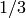
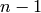
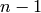
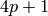
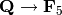
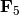
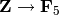
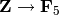

Navigation
- index
- next |
- previous |
- Sage Tutorial v4.3 »

下面我们演示如何将单独编写的文件读取到Sage中。 新建文件 example.sage, 包含以下内容：
print "Hello World"
print 2^3
你可以使用 load 命令读取和执行 example.sage 文件：
sage: load "example.sage"
Hello World
8
你也可以用 attach 命令，在当前运行的会话后面附加一个Sage文件：
sage: attach "example.sage"
Hello World
8
现在如果你修改 example.sage 并输入一个空白行(即，按 return)， 那么 example.sage 的内容将会自动重新读入Sage。
特别的, 当文件被修改后，``attach`` 会自动重载，这在调试代码的时候很方便。 反之, load 只能读入一个文件一次。
当Sage读入 example.sage 时，将其转为Python，之后由Python解释器执行。 改变是极少的，主要是将字面上的整数转为 Integer(), 字面上的实数转为 RealNumber(), 将 ^ 替换为 **, 以及类似 R.2 转为 R.gen(2) 的这种替换。 转换后的 example.sage 叫 example.sage.py 并保存在相同的目录下。 这个文件包含以下代码：
print "Hello World"
print Integer(2)**Integer(3)
字面整数被转换, ^ 替换为 **. (Python中, ^ 表示“异或”, ** 表示“乘方”。)
预分词工作是由 sage/misc/interpreter.py 实现的。
你可以把多行已缩进的代码粘贴到Sage中，只要有一个新行标识代码块的结束 （这在文件中是不需要的）。然而，将这样的代码输入Sage的最好方法是保存为文件， 并使用 attach 命令。
在数学计算中，速度是非常关键的。虽然Python是一种非常方便的高级语言， 但是某些微积分运算如果用静态的编译语言实现肯定会比Python快几个数量级。 如果完全用Python编写的话，Sage的某些运算就会太慢了。 为了解决这个问题，Sage支持一种编译型的Python，叫Cython ([Cython] 和 [Pyrex])。Cython既像Python又像C。多数Python的结构，包括列表， 条件表达式，象 += 这样的代码都是可用的。 也可以导入你已经写好的其他Python模块中的代码。并且还可以声明任意的C变量， 可以直接调用任意的C语言库。最终的代码被转化为C语言，并使用C编译器编译。
为了编译你自己的编译型Sage代码，文件要用扩展名 .spyx (而不是 .sage). 如果是用命令行，可以跟解释型代码一样，attach和load编译型代码 （notebook界面下不能attach或load Cython的代码）。 实际的编译过程是后台完成的，不需要你明确的做什么。参见 $SAGE_ROOT/examples/programming/sagex/factorial.spyx, 这是一个直接调用GMP的C语言库的编译型的阶乘函数。你自己试一下， 转到 $SAGE_ROOT/examples/programming/sagex/ 目录，然后这样做：
sage: load "factorial.spyx"
***************************************************
Recompiling factorial.spyx
***************************************************
sage: factorial(50)
30414093201713378043612608166064768844377641568960512000000000000L
sage: time n = factorial(10000)
CPU times: user 0.03 s, sys: 0.00 s, total: 0.03 s
Wall time: 0.03
这里末尾的L表示这是一个Python长整数(参见 预处理器：Sage与Python的差别).
注意，当你退出后重新进入Sage时，Sage会重新编译 factorial.spyx. 编译后的共享对象库保存在 $HOME/.sage/temp/hostname/pid/spyx. 这些文件在你退出Sage时会被删除。
对于spyx文件不会进行预分词，如，在spyx文件中, 1/3 得到0而不是有理数 . 如果 foo 是Sage库中的一个函数， 要在spyx文件中使用，需要导入 sage.all 并且使用 sage.all.foo.
import sage.all
def foo(n):
return sage.all.factorial(n)
访问定义在单独的 *.c 文件中的C语言函数也是很容易的。这有一个例子。 在同一个目录下新建文件 test.c 和 test.spyx, 包含以下内容：
纯C代码: test.c
int add_one(int n) {
return n + 1;
}
Cython代码: test.spyx:
cdef extern from "test.c":
int add_one(int n)
def test(n):
return add_one(n)
下面这样做：
sage: attach "test.spyx"
Compiling (...)/test.spyx...
sage: test(10)
11
如果在Cython文件中编译C代码还要用到另外一个 foo 库， 在Cython源码中加一行 clib foo. 类似的， 可以用声明 cfile bar 来包含一个C文件 bar.
下面的Sage脚本对整数或多项式进行因式分解：
#!/usr/bin/env sage -python
import sys
from sage.all import *
if len(sys.argv) != 2:
print "Usage: %s <n>"%sys.argv[0]
print "Outputs the prime factorization of n."
sys.exit(1)
print factor(sage_eval(sys.argv[1]))
要使用这个脚本，你的 SAGE_ROOT 必须在在PATH中。 如果上面的脚本叫 factor, 下面是用法示例：
bash $ ./factor 2006
2 * 17 * 59
bash $ ./factor "32*x^5-1"
(2*x - 1) * (16*x^4 + 8*x^3 + 4*x^2 + 2*x + 1)
Sage中的每一个对象都有良好定义的类型。 Python有广泛的基本内置类型，Sage库又添加了很多。 Python内置的类型包括字符串，列表，元组，整数和实数等，如下：
sage: s = "sage"; type(s)
<type 'str'>
sage: s = 'sage'; type(s) # you can use either single or double quotes
<type 'str'>
sage: s = [1,2,3,4]; type(s)
<type 'list'>
sage: s = (1,2,3,4); type(s)
<type 'tuple'>
sage: s = int(2006); type(s)
<type 'int'>
sage: s = float(2006); type(s)
<type 'float'>
Sage增加了很多其他类型，如，向量空间：
sage: V = VectorSpace(QQ, 1000000); V
Vector space of dimension 1000000 over Rational Field
sage: type(V)
<class 'sage.modules.free_module.FreeModule_ambient_field'>
只有特定的函数才能在作用在 V 上。其他数学软件中， 可能会用“函数”形式 foo(V,...). 在Sage中，特定的函数附加于 V 的类型（或类）上，并使用类似Java或C++的面向对象的语法，即, V.foo(...). 这可以使全局的命名空间保持整洁，而不被成千上万的函数搞乱。 而且不同作用的函数都可以叫foo，还不用做参数的类型检查（或case语句） 来决定要调用哪一个。如果你重用了一个函数的名字，那个函数还是可用的 （如，你把什么东西命名为 zeta, 然后又想计算0.5的Riemann-Zeta函数值， 你还是可以输入 s=.5; s.zeta()).
sage: zeta = -1
sage: s=.5; s.zeta()
-1.46035450880959
通常情况下，常用的函数调用方式也是支持的，这样方便些， 而且数学表达式用面向对象的方式调用看着不习惯。这有几个例子。
sage: n = 2; n.sqrt()
sqrt(2)
sage: sqrt(2)
sqrt(2)
sage: V = VectorSpace(QQ,2)
sage: V.basis()
[
(1, 0),
(0, 1)
]
sage: basis(V)
[
(1, 0),
(0, 1)
]
sage: M = MatrixSpace(GF(7), 2); M
Full MatrixSpace of 2 by 2 dense matrices over Finite Field of size 7
sage: A = M([1,2,3,4]); A
[1 2]
[3 4]
sage: A.charpoly('x')
x^2 + 2*x + 5
sage: charpoly(A, 'x')
x^2 + 2*x + 5
要列出  的所有成员函数，使用tab补全功能。
先输入 A., 再按 [tab], 正如 反向查找和Tab补全 中所述。
的所有成员函数，使用tab补全功能。
先输入 A., 再按 [tab], 正如 反向查找和Tab补全 中所述。
列表类型保存任意类型的元素。和C，C++等等一样
（但是和多数标准的计算机代数系统不一样），列表中的元素下标从  开始计数。
开始计数。
sage: v = [2, 3, 5, 'x', SymmetricGroup(3)]; v
[2, 3, 5, 'x', Symmetric group of order 3! as a permutation group]
sage: type(v)
<type 'list'>
sage: v[0]
2
sage: v[2]
5
(索引一个列表时，如果下标不是Python整数类型也是可以的！） Sage整数（或有理数，或其他有 __index__ 方法的对象）都可以正常索引。
sage: v = [1,2,3]
sage: v[2]
3
sage: n = 2 # SAGE Integer
sage: v[n] # Perfectly OK!
3
sage: v[int(n)] # Also OK.
3
range 函数新建一个Python整数（不是Sage整数）的列表：
sage: range(1, 15)
[1, 2, 3, 4, 5, 6, 7, 8, 9, 10, 11, 12, 13, 14]
使用包含列表(list comprehension)的方式构造列表是非常有用的：
sage: L = [factor(n) for n in range(1, 15)]
sage: print L
[1, 2, 3, 2^2, 5, 2 * 3, 7, 2^3, 3^2, 2 * 5, 11, 2^2 * 3, 13, 2 * 7]
sage: L[12]
13
sage: type(L[12])
<class 'sage.structure.factorization.Factorization'>
sage: [factor(n) for n in range(1, 15) if is_odd(n)]
[1, 3, 5, 7, 3^2, 11, 13]
更多关于如何使用包含列表创建列表的内容，请参见 [PyT].
列表切片(list slicing)是一个有趣的功能。若 L 是一个列表，
那么 L[m:n] 返回 L 的一个子列表，从第  个元素开始到第  个元素，象下面这样。
个元素开始到第  个元素，象下面这样。
sage: L = [factor(n) for n in range(1, 20)]
sage: L[4:9]
[5, 2 * 3, 7, 2^3, 3^2]
sage: print L[:4]
[1, 2, 3, 2^2]
sage: L[14:4]
[]
sage: L[14:]
[3 * 5, 2^4, 17, 2 * 3^2, 19]
元组(tuple)与列表类似，除了它们是固定的，也就是说， 一旦它们被建立，就不能再修改。
sage: v = (1,2,3,4); v
(1, 2, 3, 4)
sage: type(v)
<type 'tuple'>
sage: v[1] = 5
...
TypeError: 'tuple' object does not support item assignment
序列(sequence)是第三种面向列表的Sage类型。 与列表和元组不同，序列不是Python内置的类型。 序列默认是可修改的，但是可以使用 Sequence 类中的 set_immutable 方法设置成不能修改的，如下例所示。 一个序列中的所有元素都有共同的祖先(parent)， 称为序列的领域(sequences universe).
sage: v = Sequence([1,2,3,4/5])
sage: v
[1, 2, 3, 4/5]
sage: type(v)
<class 'sage.structure.sequence.Sequence'>
sage: type(v[1])
<type 'sage.rings.rational.Rational'>
sage: v.universe()
Rational Field
sage: v.is_immutable()
False
sage: v.set_immutable()
sage: v[0] = 3
...
ValueError: object is immutable; please change a copy instead.
序列是从列表继承下来的，可用于任何列表可用的地方：
sage: v = Sequence([1,2,3,4/5])
sage: isinstance(v, list)
True
sage: list(v)
[1, 2, 3, 4/5]
sage: type(list(v))
<type 'list'>
另外一个例子，向量空间的基是不可修改的序列， 因为你不能修改它们。
sage: V = QQ^3; B = V.basis(); B
[
(1, 0, 0),
(0, 1, 0),
(0, 0, 1)
]
sage: type(B)
<class 'sage.structure.sequence.Sequence'>
sage: B[0] = B[1]
...
ValueError: object is immutable; please change a copy instead.
sage: B.universe()
Vector space of dimension 3 over Rational Field
字典(dictionary)(有时也称为联合数组)是从“可乱序”(hashable)的对象 （如字符串，数字和元组等，详细信息参见Python文档 http://docs.python.org/tut/node7.html 和 http://docs.python.org/lib/typesmapping.html） 到任意对象的映射。
sage: d = {1:5, 'sage':17, ZZ:GF(7)}
sage: type(d)
<type 'dict'>
sage: d.keys()
[1, 'sage', Integer Ring]
sage: d['sage']
17
sage: d[ZZ]
Finite Field of size 7
sage: d[1]
5
第三个键值展示了字典的索引可以是复杂的对象，如，整数环。
你可以将上面的字典转换为同样内容的列表：
sage: d.items()
[(1, 5), ('sage', 17), (Integer Ring, Finite Field of size 7)]
一个常用的操作是在字典的对中遍历：
sage: d = {2:4, 3:9, 4:16}
sage: [a*b for a, b in d.iteritems()]
[8, 27, 64]
字典是没有顺序的，如最后一个例子所示。
Python有内置的集合类型。主要的功能是迅速的判断一个元素是否属于集合， 以及标准的集合运算。
sage: X = set([1,19,'a']); Y = set([1,1,1, 2/3])
sage: X
set(['a', 1, 19])
sage: Y
set([1, 2/3])
sage: 'a' in X
True
sage: 'a' in Y
False
sage: X.intersection(Y)
set([1])
Sage也有自己的集合类型，多数情况下是用Python内置的集合类型实现的， 但是有一些额外的Sage相关的函数。新建一个Sage的集合使用 Set(...).
sage: X = Set([1,19,'a']); Y = Set([1,1,1, 2/3])
sage: X
{'a', 1, 19}
sage: Y
{1, 2/3}
sage: X.intersection(Y)
{1}
sage: print latex(Y)
\left\{1, \frac{2}{3}\right\}
sage: Set(ZZ)
Set of elements of Integer Ring
迭代器是最近才加入Python中的，在数学应用中特别有用。 下面是几个例子，更多内容请参见 [PyT]. 我们生成一个在不超过 的非负整数的平方数上的迭代器。
sage: v = (n^2 for n in xrange(10000000))
sage: v.next()
0
sage: v.next()
1
sage: v.next()
4
我们新建一个在形如  ( 为素数) 的素数上的迭代器，
并观察前面几个。
为素数) 的素数上的迭代器，
并观察前面几个。
sage: w = (4*p + 1 for p in Primes() if is_prime(4*p+1))
sage: w # in the next line, 0xb0853d6c is a random 0x number
<generator object at 0xb0853d6c>
sage: w.next()
13
sage: w.next()
29
sage: w.next()
53
特定的环，如有限域和整数环，其上都有迭代器：
sage: [x for x in GF(7)]
[0, 1, 2, 3, 4, 5, 6]
sage: W = ((x,y) for x in ZZ for y in ZZ)
sage: W.next()
(0, 0)
sage: W.next()
(0, 1)
sage: W.next()
(0, -1)
我们已经见到几个 for 循环常见用法的例子。Python中， for 循环是缩进的，如
>>> for i in range(5):
print(i)
0
1
2
3
4
注意for语句结尾处的冒号（不象GAP或Maple，这里没有“do”或“od”）， 和循环体(也就是 print(i))的缩进。缩进是非常重要的。 输入“:”后按 enter, Sage会自动为你缩进，象下面这样。
sage: for i in range(5):
... print(i) # now hit enter twice
0
1
2
3
4
符号 = 用于赋值。 符号 == 用于比较是否相等：
sage: for i in range(15):
... if gcd(i,15) == 1:
... print(i)
1
2
4
7
8
11
13
14
要记住，缩进决定了 if, for 和 while 语句的结构：
sage: def legendre(a,p):
... is_sqr_modp=-1
... for i in range(p):
... if a % p == i^2 % p:
... is_sqr_modp=1
... return is_sqr_modp
sage: legendre(2,7)
1
sage: legendre(3,7)
-1
当然，这不是Legendre符号的一个有效实现， 只是为了展示Python/Sage编程的某些方面。 Sage中函数{kronecker}通过C语言库调用PARI来有效的计算Legendre符号。
最后我们看一下比较运算符，如 ==, !=, <=, >=, >, <, 如果可能的话， 会自动将两边的数据转换为同一类型：
sage: 2 < 3.1; 3.1 <= 1
True
False
sage: 2/3 < 3/2; 3/2 < 3/1
True
True
几乎任意两个对象都可以进行比较，没有假设对象是全序的。
sage: 2 < CC(3.1,1)
True
sage: 5 < VectorSpace(QQ,3) # output can be somewhat random
True
对于符号不等式，使用bool函数：
sage: x < x + 1
x < x + 1
sage: bool(x < x + 1)
True
Sage中比较两个不同类型的对象时， 多数情况下Sage会尝试强制将对象转换为规范的共同父类。如果成功转换， 比较就在转换后的对象间进行；如果转换不成功，对象被认为不相等。 要测试两个变量是否指向同一个对象，使用 is. 如：
sage: 1 is 2/2
False
sage: 1 is 1
False
sage: 1 == 2/2
True
下面两行中，头一行不相等是因为没有规范映射 ,
从而没有规范的方法比较  中的  和
中的 . 相反，存在规范映射 ,
所以第二个比较是 True. 注意到顺序不影响结果。
和
中的 . 相反，存在规范映射 ,
所以第二个比较是 True. 注意到顺序不影响结果。
sage: GF(5)(1) == QQ(1); QQ(1) == GF(5)(1)
False
False
sage: GF(5)(1) == ZZ(1); ZZ(1) == GF(5)(1)
True
True
sage: ZZ(1) == QQ(1)
True
警告：Sage中的比较比Magma中更严格，Magma中 中的
与 中的 相等。
sage: magma('GF(5)!1 eq Rationals()!1') # optional magma required
true
本节作者：Martin Albrecht (malb@informatik.uni-bremen.de)
“Premature optimization is the root of all evil.” - Donald Knuth
有时检查代码的瓶颈对于了解哪一部分占用了最多的计算时间是很有用的。 这可以帮助确定最需要优化哪一部分。Python和Sage提供几种性能分析选项。
最简单的是在交互命令行中使用 prun 命令。 它返回一个描述每个函数占用多少计算时间的摘要。 例如，要分析有限域上的矩阵乘法，可以这样做：
sage: k,a = GF(2**8, 'a').objgen()
sage: A = Matrix(k,10,10,[k.random_element() for _ in range(10*10)])
sage: %prun B = A*A
32893 function calls in 1.100 CPU seconds
Ordered by: internal time
ncalls tottime percall cumtime percall filename:lineno(function)
12127 0.160 0.000 0.160 0.000 :0(isinstance)
2000 0.150 0.000 0.280 0.000 matrix.py:2235(__getitem__)
1000 0.120 0.000 0.370 0.000 finite_field_element.py:392(__mul__)
1903 0.120 0.000 0.200 0.000 finite_field_element.py:47(__init__)
1900 0.090 0.000 0.220 0.000 finite_field_element.py:376(__compat)
900 0.080 0.000 0.260 0.000 finite_field_element.py:380(__add__)
1 0.070 0.070 1.100 1.100 matrix.py:864(__mul__)
2105 0.070 0.000 0.070 0.000 matrix.py:282(ncols)
...
这里 ncals 是调用的次数, tottime 是给定函数所用的总时间 (不包括调用子函数的时间), percal 是 tottime 除以 ncals 的商. cumtime 是函数用的时间和所有子函数用的时间 (即从调用开始到退出的时间), percall 是 cumtime 除以基本调用次数的商, filename:lineno(function) 提供了每个函数的相关信息。经验规律是：列表中函数排的越靠前， 所花费的时间越多，也就越需要优化。
通常, prun? 会提供如何使用性能分析器的详细信息， 并解析输出结果的含义。
分析的数据可以写入一个对象，这样可以就近检查：
sage: %prun -r A*A
sage: stats = _
sage: stats?
注意：输入 stats = prun -r A\*A 会显示语法错误， 因为prun是IPython shell的命令，不是一个正常的函数。
要想得到漂亮的图形化分析结果，可以使用hotshot分析器。 它是调用 hotshot2cachetree 和程序 kachegrind (仅在Unix下有效) 的一个小脚本。使用hotshot分析器分析同一个例子：
sage: k,a = GF(2**8, 'a').objgen()
sage: A = Matrix(k,10,10,[k.random_element() for _ in range(10*10)])
sage: import hotshot
sage: filename = "pythongrind.prof"
sage: prof = hotshot.Profile(filename, lineevents=1)
sage: prof.run("A*A")
<hotshot.Profile instance at 0x414c11ec>
sage: prof.close()
结果保存在当前工作目录的 pythongrind.prof 文件中。 它可以被转换为可以可视化的cachegrind格式。
在系统shell中输入
hotshot2calltree -o cachegrind.out.42 pythongrind.prof
输出文件 cachegrind.out.42 可以由 kcachegrind 查看。 请注意遵守命名习惯 cachegrind.out.XX.
| [Cython] | Cython, http://www.cython.org |
| [Pyrex] | Pyrex, http://www.cosc.canterbury.ac.nz/~greg/python/Pyrex/ |
| [PyT] | (1, 2) The Python Tutorial, http://www.python.org/ |